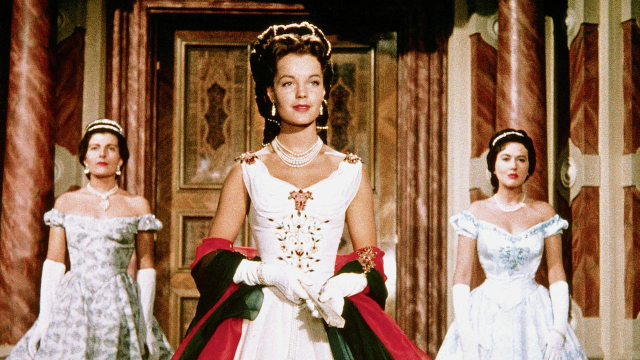

Sissi – Fateful Years of an Empress
- Start/Home
- Song
- Sissi
- About
- Contact Form
- Errors
- ORF (external link)

Plot
Sissi – Fateful Years of an Empress (German: Sissi – Schicksalsjahre einer Kaiserin) is a 1957 Austrian film directed by Ernst Marischka and starring Romy Schneider, Karlheinz Böhm, Magda Schneider, Gustav Knuth and Josef Meinrad, costumes by Gerdago (Gerda Gottschlich). It was entered into the 1958 Cannes Film Festival. It is the last film in the Sissi trilogy, following Sissi (1955) and Sissi – The Young Empress (1956). The director Ernst Marischka planned a fourth film, but Schneider refused to play Sissi any longer. She appeared 15 years later again as Empress Elisabeth in Luchino Visconti's 1972 film Ludwig*
* This text was copied from Wikipedia.
Cast
- Romy Schneider as Empress Elisabeth of Austria, or "Sissi"
- Karlheinz Böhm as Emperor Franz Joseph I of Austria
- Vilma Degischer as Archduchess Sophie, Franz Joseph's mother
- Erich Nikowitz [de] as Archduke Franz Karl, Franz Joseph's father
- Magda Schneider as Duchess Ludovika in Bavaria, Sissi's mother
- Gustav Knuth as Duke Max in Bavaria, Sissi's father